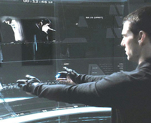

タイトル
ソース
プレゼンについて
start
マイノリティ・リポート風I/F
GestureSocket
作ってみたじょ。
next >
近未来のI/F

こんなことしたかった（´ω｀）
next >
レシピ
Xtion(or Kinect)で動作を認識
Jettyを利用してサーバを構築
WebSocketでクライアントに配布
クライアントはジェスチャーを受けて動作する
・・・なぜっこんなにややこしいの（´ω｀）
next >
まず何故C/Sか？
スタンダロンだとすごいのはすでにいっぱい！
実際わざわざインストールしてやるとか。。。
離れたところのものが動くとクールじぇね？
next >
何故サーバを作ったか？
軽量のタブレットなどサーバ側に組むヤダ。
タブレットとかのIP調べて接続するのヤダ
でもサーバだと、動きを送れないよね？
next >
pushができるWebSocket!
やっとRFC載ったしねー
ブラウザ(JavaScript)で簡単にアクセスできるし！
まぁPushできればWebSocketを選択する必要もないのだが、、、
next >
そして未来は。。。
next >
教授がジェスチャー！
next >
生徒はタブレット！
next >
「ハイ、次のページに書いてあるように」
next >
みたいな！
next >
そして
ついて行けない生徒は
おいていかれる(´Д`；)
next >
ソースも公開してるよ
https://github.com/secondarykey/GestureSocket
github
next >
プレゼンについて
jmpress.js
を使ってるよ
impress.js* のフォークでjQuery用に作られている
home >
ジェスチャーをしてください。